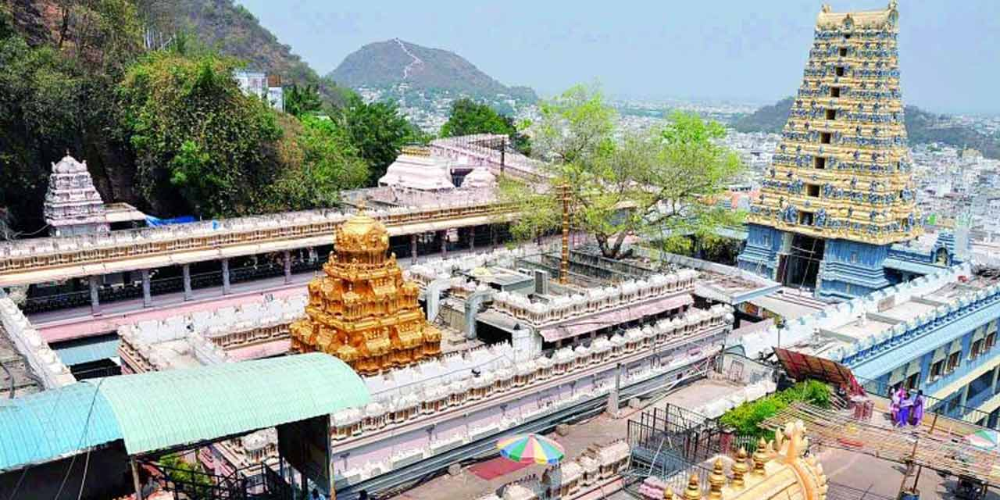
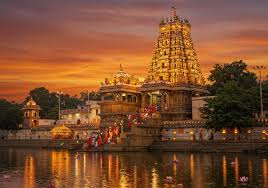

Tirumala Venkateswara Temple
Location: Tirumala Hills, Tirupati, Andhra Pradesh
Deity: Lord Venkateswara (form of Vishnu)
Architecture: Dravidian style; gold-plated sanctum (Ananda Nilayam)
Historical Era: Dates back to 9th century; flourished under Vijayanagara Empire
Significance: One of the richest and most visited temples in the world
Legend: Lord Vishnu took a loan from Kubera for his marriage—donations help repay it
Pilgrimage: 50,000–100,000 daily visitors; famous for hair offerings (tonsure)
Prasadam: World-famous Laddu, GI-tagged
Management: Administered by Tirumala Tirupati Devasthanams (TTD)
Kanaka Durga Temple


Location: Indrakeeladri Hill, Vijayawada, Andhra Pradesh
Deity: Goddess Kanaka Durga (form of Mahishasura Mardini)
Architecture: Dravidian style with a commanding view of the Krishna River
Significance: Major Shakti Peetha in South India
Legend: Goddess Durga is believed to have killed the demon Mahishasura here and settled on Indrakeeladri Hill
Historical Mentions: Referenced in Kalika Purana and Durga Saptashati
Festivals: Famous for Dasara Navaratri celebrations—attracts lakhs of devotees
Access: Reachable by road, ghat steps or ropeway